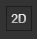
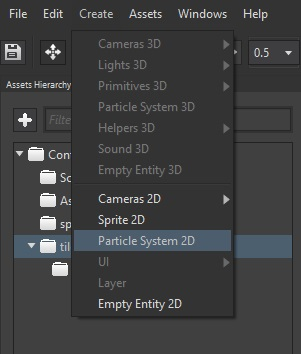
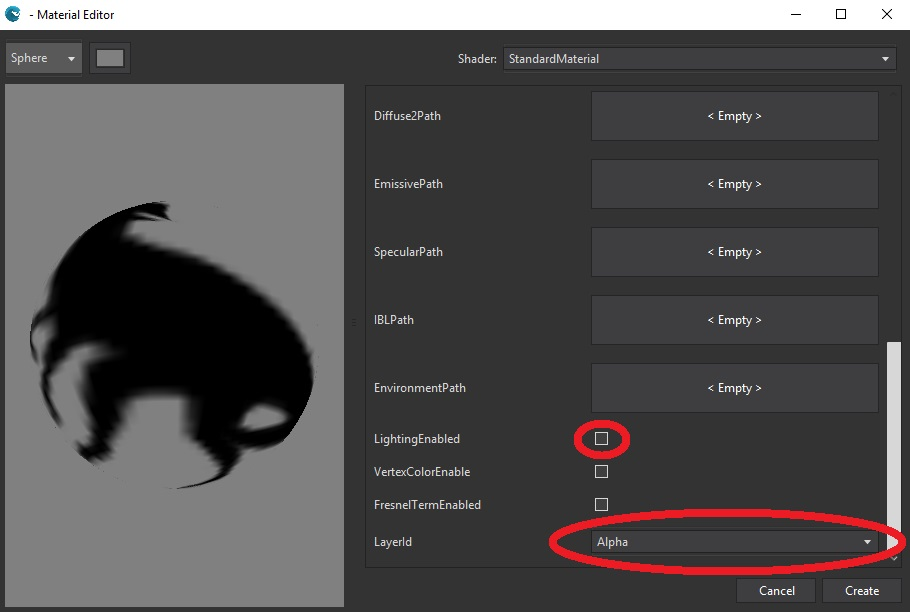

Goal
Particles allow us to give dynamism to a game by creating good-looking effects. The well-know example of Braid does a heavy use of 2D particles, where even the backgrounds were done using this technique. We will learn how to create a 2D particle system with Wave Engine, and how to customize it looking to fit our effect needs.
Hands-on
Creating a particle system involves two different tasks:
- the particle system definition it-self: how the particles will behave
- the
Entitywhich renders the above particle system on a position on screen
Using Wave Visual Editor
Open or create a WaveEngine project in Wave Visual Editor:
Set the Editor in 2D mode in the icon .
Open the Create menu and select the Particle System 2D:

Import the asset you want to use as particle. In this sample we have used the dinoparticle.png asset from the Particles2D Sample Create a Material to the particles and set it at the Particle Entity Material.
{kind=link}
Important
Set the Material 'LightingEnabled' Property to false and set the Material 'LayerType' Property to AlphaLayer.

Now you can configure the ParticleSystem2D Component from the Entity:
- Emit: True to emmit particles.
- NumParticles: Max particles at same time.
- EmmiterShape: [Rectangle|FillRectangle|Circle|FillCircle] The shape that the emitter will have.
- EmitRate: Particles per second.
- SortEnabled: Enable sorting.
- LocalVelocity: particle global velocity
- RandomVelocity: velocity variation (different every particle).
- Gravity: global acceleration.
- InitialAngle: Angle for a particle (initial).
- InitialAngleVariation: Angle variation for every particle (initial).
- MinRotateSpeed/MaxRotateSpeed: Modifies rotation speed by particle.
- MinSize/MaxSize: Modifies size by particle.
- EndDeltaScale: Scale value on the end of the particle live.
- MinLife/MaxLife: Time to live of every particle.
- LinearColorEnabled: Change the particle color in the particle's live.
- MinColor/MaxColor: Color selection.
- AlphaEnabled: True for allow transparency in particles.
- CollisionType: [None|Bottom|Top|Left|Right] Enables particle collision in a rectangle defined by CollisionMin/CollisionMax properties.
- CollisionMin/CollisionMax: Defines a Rectangle to collision.
- CollisionSpread: Defines the particle spread in the collision.
- CollisionBehavior: [Die|Bounce] Selected what happend on collision.
- Bouncines: When CollisionBehavior is Bounce this property defines the bounciness of the particle.

With Visual Studio (for Windows or Mac)
Open or create a WaveEngine project in Wave Visual Editor, import the particle asset and create the material to particles:
Import the namespace in scene class:
using WaveEngine.Components.Particles;
Building the entity:
var entity = new Entity()
.AddComponent(new Transform2D())
// ParticleSyste2D Requires a MaterialsMap
.AddComponent(new MaterialsMap(new StandardMaterial()
{
DiffusePath = WaveContent.Assets.dinoParticle_png,
LightingEnabled = false,
LayerType = DefaultLayers.Alpha
}))
// Set some particle properties
.AddComponent(new ParticleSystem2D()
{
// Amount of particles drawn on a game loop
NumParticles = 200,
// Amount of particles emited per second
EmitRate = 1500,
// Minimum time a particle will be alive
MinLife = 1,
// Maximum time a particle will be alive
MaxLife = 3,
// 2D vector containing the local velocity a particle will take
LocalVelocity = new Vector2(0.4f, -2f),
// 2D vector containing a random velocity applied to the local one
RandomVelocity = new Vector2(2f, 1.5f),
// Minimum size of the particle
MinSize = 15,
// Maximum size of the particle
MaxSize = 40,
// Minimum rotation speed for a particle
MinRotateSpeed = 0.03f,
// Maximum rotation speed for a particle
MaxRotateSpeed = -0.03f,
// Delta scale applied during the particle's life
EndDeltaScale = 0f,
// Size the emitter will fit in during execution
EmitterSize = new Vector3(30),
// Gravity applied to each particle
Gravity = new Vector2(0, 0.03f),
// Shape the emitter will form during execution
EmitterShape = ParticleSystem2D.Shape.FillCircle
// You can set here every property you need
})
.AddComponent(new ParticleSystemRenderer2D());
this.EntityManager.Add(entity);
Wrap-up
Within this recipe we have created an effect through 2D particles.